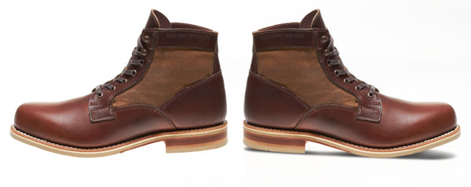
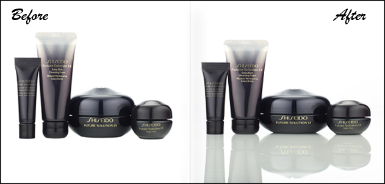

<div class="serviceForImg">
    <p class="servclippara"><label>A large volume</label> of images are being manipulated by our special Designing team that fully looked in numerous from the first one. There’s no similarity found between before and when manipulation pictures. All the credit goes to our knowledgeable graphics design team in an exceedingly method of nice approach.</p>
    <p class="servclippara"></p>

    <div class="mainclipImg">
        <h3>Drop Shadow</h3>
        <p class="clipservPrice">0.25$</p>
        
        
        
        <p>By using a drop shadow, a fake shadow with a glow can be created on the rear side of a product.</p>
    </div>
        <div class="mainclipImg">
        <h3>Natural Shadow</h3>
        <p class="clipservPrice">0.49$</p>
        
        
        
        <p>It is also known as product shadow. It can give a product more realistic  view.</p>
    </div>
        <div class="mainclipImg">
        <h3>Reflection / Mirror Shadow</h3>
        <p class="clipservPrice">0.49$</p>
        
        
        
        <p>Reflection shadow is added to such products which background surface plate reflects in the bottom area during photography.</p>
    </div>
      <div class="clipMuskcorr"> 
        <h3>Product images processing services:</h3>
        <div>
            <ol class="jewlryList">
                <li>Background remove</li>
                <li>Shadow making</li>
                <li>Product image retouching</li>
                <li>Image resizing</li>
            </ol>
        </div>
    </div>
    <div class="clipMuskcorr">
      <h3>Our Process – How does it work?</h3>
      <ul>
          <li>Step 1 – Upload your images</li>
          <li>Step 2 – We analyze the complexity</li>
          <li>Step 3 – We tell you the rate for the whole bundle</li>
      </ul>
    </div>
    <div class="clipMuskcorr">
        <h3>Try before order!</h3>
        <p>Expertwebwork offers you trial of 2 Clipping Path images to show you our outstanding quality, low cost, and speed of turnaround time. You can send us any type of file format such as TIF, EPS, JPG, PSD etc. We have FTP and Dropbox account to transfer big size file.</p>
    </div>
    <br>
    <h1>Request for a Quote</h1>
</div>
{% include sec_discuss_withoutcontainer.html %}